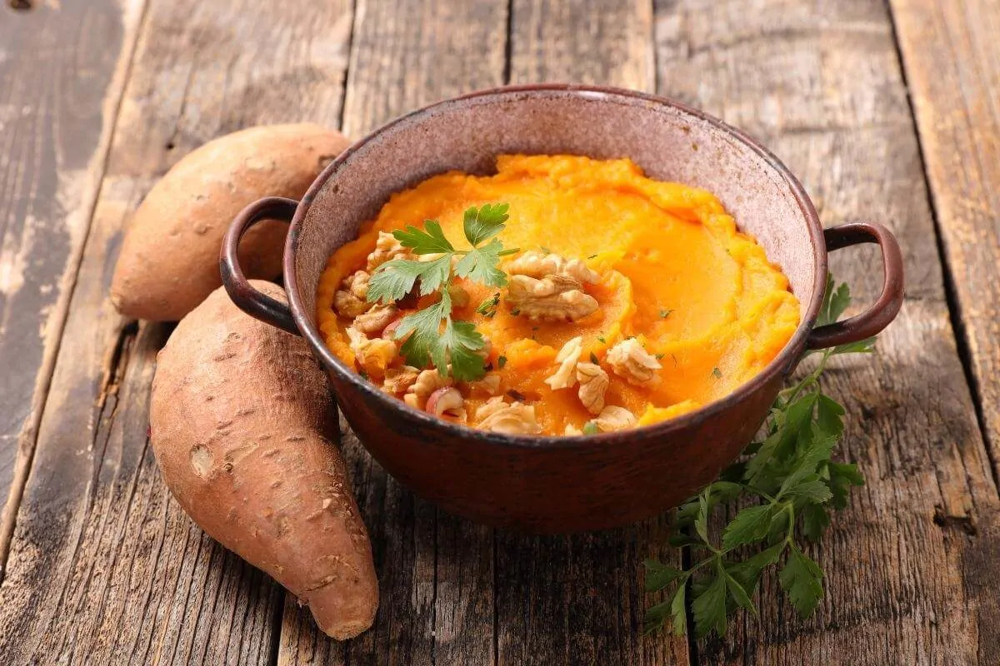

Purée de patate douce
Ingrédients :
● 500 g de patates douces
● 4 cuillères à soupe de lait végétal ( lait de coco, lait de soja, lait d’amande...)
● 2 cuillères à soupe d’huile d’olive
● sel
● 1 pincée de cannelle
● Noix de muscade fraîchement râpée
● Quelques flocons de piment